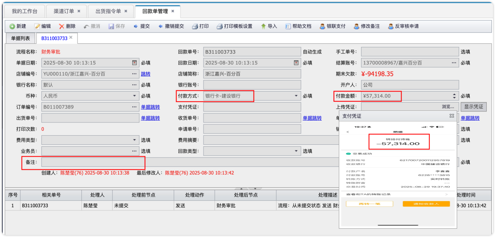
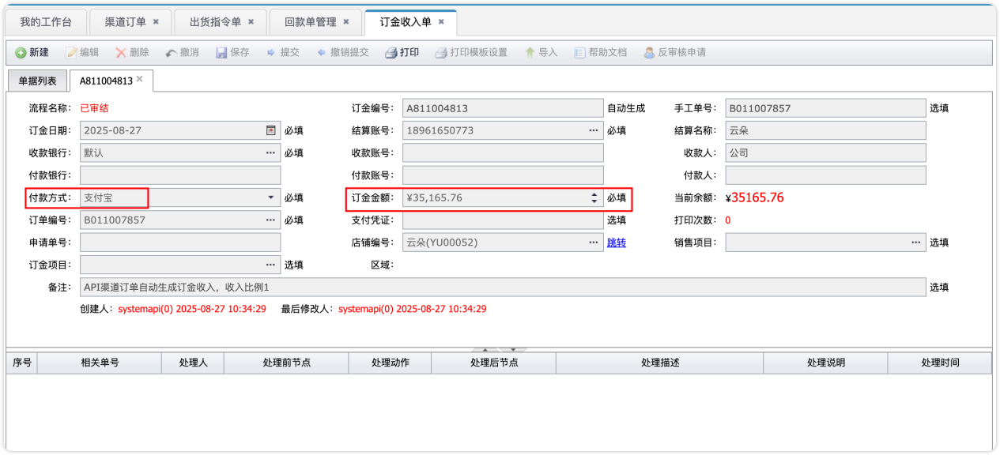
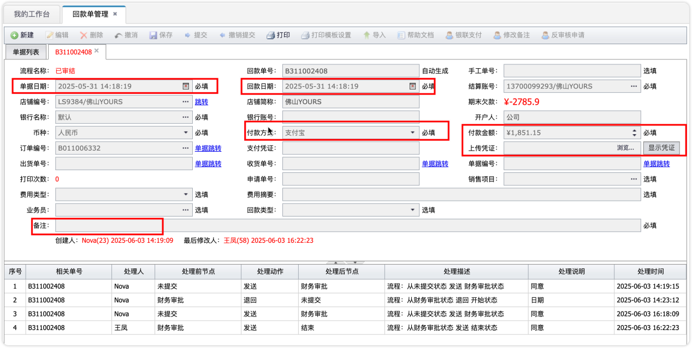
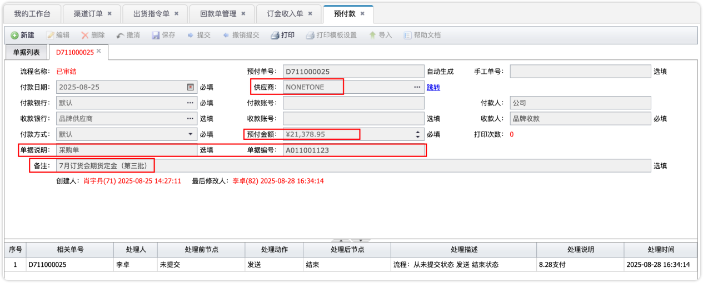
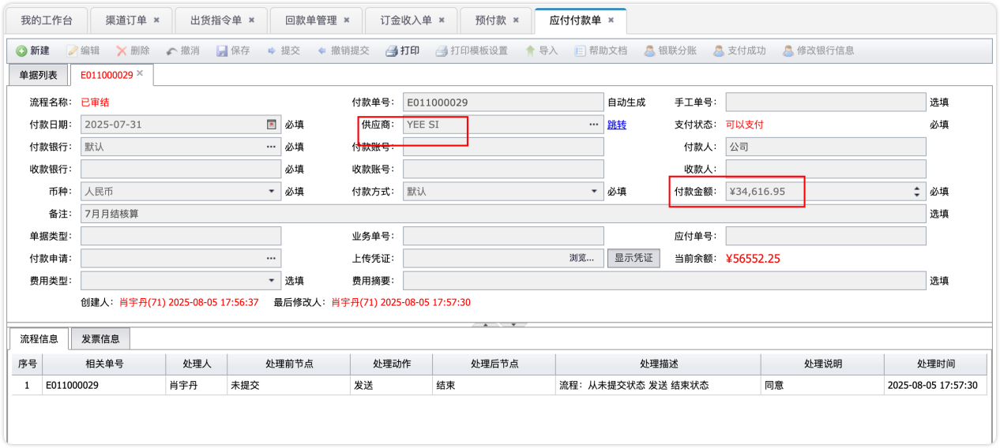
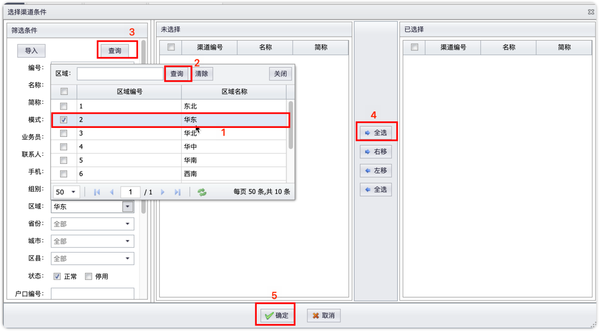
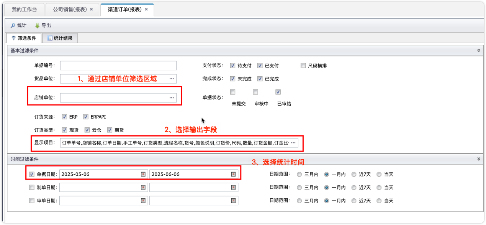
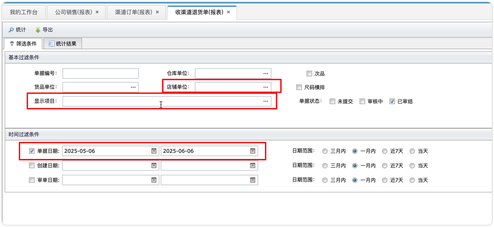
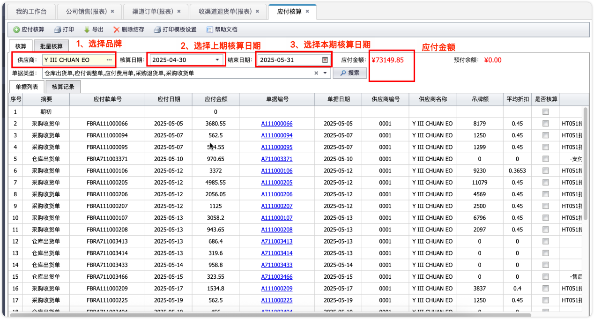
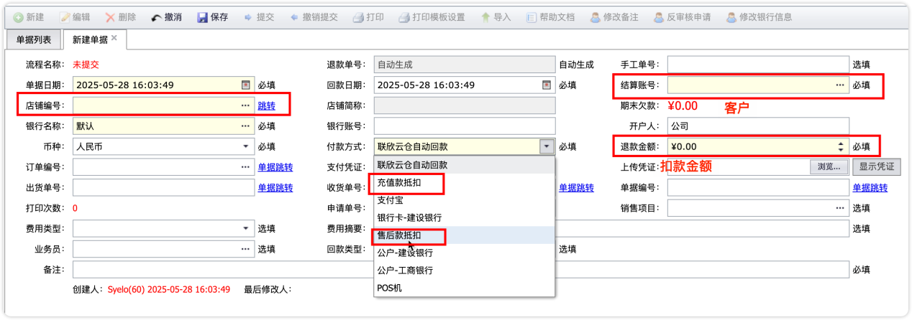

| 单据类型 | 说明 |
|---|---|
| 回款单 | 客户付款后市场部在康雷制作的收款单据，云仓由市场部自行审核，现货/期货提交财务审核 |
| 订金收入单 | 期货订单的50%订金单据，市场部制作后提交财务审核 |
| 预付款单 | 商品部给品牌方支付50%订金时创建，财务付款后提交此单据 |
| 应付付款单 | 月结时商品部确认结算款后新建，财务付款后提交 |
| 应收费用单 | 冲减运费、税费的单据，确保回款金额与订单金额一致 |
责任人：财务部
云仓和现货订单在联欣下单后，康雷自动生成100%订单金额的回款单。市场部填写付款方式、收款金额、上传凭证后提交：
财务审核要点：核对付款金额、付款方式与付款凭证截图是否一致。

▲ 回款单审核界面
期货订单在康雷生成50%订单金额的订金收入单，市场部做单后提交财务审核。
财务审核要点：核对付款金额、付款方式与付款凭证截图是否一致。

▲ 订金收入单审核界面
市场部收齐尾款后，提交带有付款方式、回款日期、付款凭证的回款单。财务核对实际收款流水无误后通过审核，商品部才能有足够余额进行发货。

▲ 期货尾款回款单审核界面
责任人：财务部 + 商品部
商品部根据截单的总采购金额，给品牌方支付50%的品牌订金，创建预付款单据并关联采购单号。财务部付款后提交预付款单据。

▲ 预付款单操作界面
每月商品部根据系统发货明细，核对上月发货明细并与品牌确认结算款后，新建应付付款单。
付款金额 = 全款云仓 + 全款现货 + 50%期货尾款
财务部付款后操作提交本单据。

▲ 应付付款单操作界面
责任人：财务部
通过渠道订单报表筛选店铺区域，选择对应区域店铺进行统计：

▲ 渠道订单报表 - 按区域筛选
筛选条件设置完成后，点击统计查看明细：

▲ 统计明细查看
客户退货、换货有差额的，都会体现在收渠道退货报表中：

▲ 收渠道退货报表
责任人：财务部
通过此功能核对商品部提交的钉钉付款申请，各单据费用类型如下：
| 订单类型 | 费用体现 | 说明 |
|---|---|---|
| 期货/现货 | 采购收货单 | 商品采购费用 |
| 云仓 | 仓库出货单 | 云仓发货费用 |
| 运费等 | 应付费用单 | 正数增加应付，负数减少应付 |
| 期货订金 | 预付款 | 已付品牌订金 |
所有单据叠加计算后为本期应付总额。月结付款后，核实无误点击应付核算生成本期账单，对本期账单进行封帐结存。

▲ 应付核算操作界面
责任人：财务部
客户使用品牌余额支付时，需区分以下两种情况：
制作一张支付方式为"余额支付"的回款单即可。
制作两张单：一张支付方式为"余额支付"的回款单 + 一张实际回款方式的回款单。

▲ 余额支付操作示例